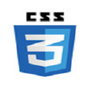

HTML is the standard markup language used to create web pages.
It defines the structure and content of web pages using a series of elements and tags.
More...HTML is the standard markup language used to create web pages.
It defines the structure and content of web pages using a series of elements and tags.
More...
CSS is a language used in web development to control the presentation and layout of HTML elements.
It allows developers to style web pages by defining rules for elements such as colors, fonts, spacing, and positioning.
More...JavaScript is a scripting language that allows you to create dynamic and interactive web pages.
It is a powerful tool for web development, enabling you to control multimedia, animate images, and much more.
More...Bootstrap is framework used for creating responsive, mobile-first websites.
It offers a prebuilt grid system, ready-to-use components, and powerful plugins, making it a go-to choice for modern web design.
More...React is a library for building user interfaces, particularly for single-page applications.
It allows developers to create reusable UI components, which can manage their own state and be composed to build complex user interfaces.
More...Node.js is a cross-platform runtime environment that allows to execute JavaScript code outside of a web browser.
It enables developers to build server-side applications using the same language they use for client-side development.
More...